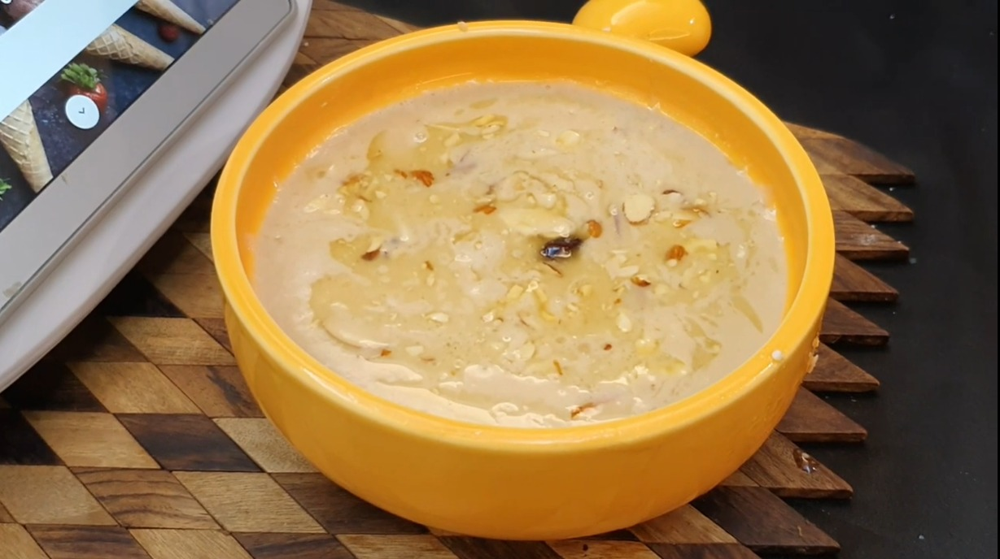
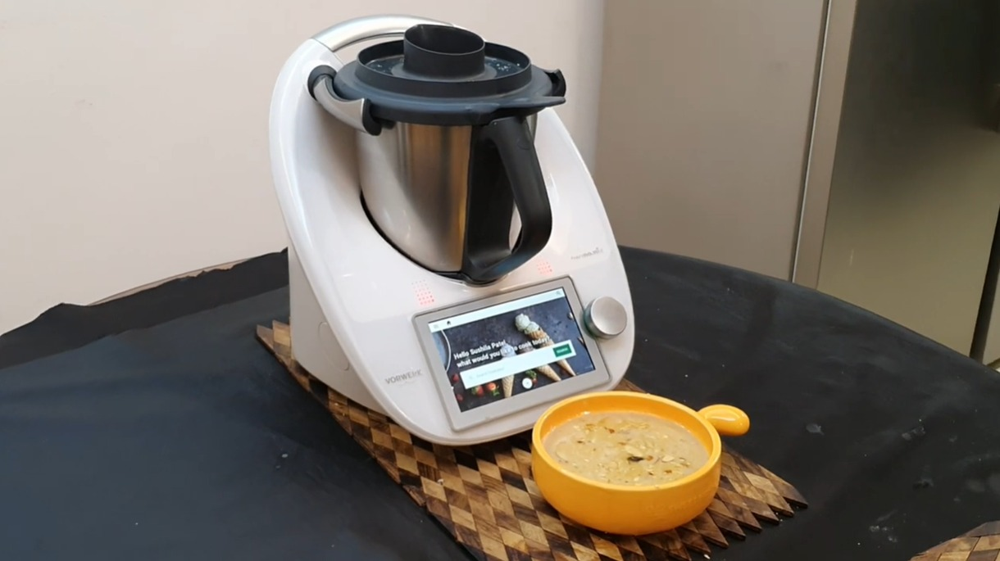

Potato

Payasam


Broadly showcases the Asian as well as international recipes, done with new technology and friendly German Techno Chef "Thermomix". This is new-age cooking. Simple, Safe, Scrumptious.
In the fast paced life, everyone is running around to achieve their goals, but mainly we compromise on eating and that too right cooked food. Food which is cooked with a consistent temperature, the right texture, easy to make and authentic. The cooking is a labour of love and if we can serve the food with love passion and soul to it then creates the magic to you. So serving you all with a plate full of enthusiasm and traditional cooking in a whole new avatar.
Find us on Facebook!